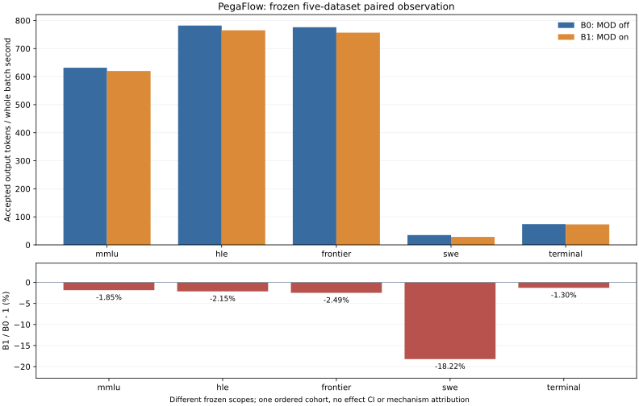

执行状态：completed；完整执行标记：True。这不是自动通过项目四目标。
B0与B1使用同一基础引擎、模型、硬件及共同配置，分别关闭/开启目标MOD。具体身份与必要适配见本批冻结计划；不能用准备、HTTP成功或零调用宣称机制收益。
模型：Qwen3.5-35B-A3B
BF16，修订712cf74392b05026a6db2bf213d343747d1f6d45。设备：2×Ascend910B2,64GiB/card，物理[2, 5]/逻辑[0, 1]，并行{"tensor": 2, "pipeline": 1, "data": 1, "expert": false}。
MOD：https://github.com/vLLM-HUST/pegaflow-hust，源码e2cdc2f7b32d8294b54a74545c05d103e5a5ecaf；基础vLLM0fc695fc6d1d82e9a5ac6835ac8e4e1c83703665、Ascend5cb98caaadeff42b5b62b996e34bb2aaa29d20fd及披露的共同兼容/测量适配。标准five-datasets-20261113-v1/SHA66c050b7c6d705853f10bc437e6ace1707a9b46d43b6bdb7159724045045b756。
依赖：{"torch": "2.10.0+cpu", "torch-npu": "2.10.0.post4", "vllm": "0.23.0+empty", "vllm-ascend": "0.23.0", "transformers": "5.5.4", "tokenizers": "0.22.2", "CANN": "9.1 installedimage/path"}。完整身份与B0/B1开关见绑定，冻结计划、进程/初始化开销与原始数字/独立核验分别保留。
| 数据集 | B0成功/计划 | B1成功/计划 | B0 tok/s | B1 tok/s | 吞吐变化 | TTFT P95改善 | TPOT均值改善 |
|---|---|---|---|---|---|---|---|
| mmlu | 200/200 | 200/200 | 631.681374 | 619.995317 | -1.850% | +2.524% | -0.471% |
| hle | 200/200 | 200/200 | 781.984881 | 765.199830 | -2.146% | +0.412% | -3.268% |
| frontier | 160/160 | 160/160 | 776.048568 | 756.743061 | -2.488% | -3.431% | +1.142% |
| swe | 64/64 | 64/64 | 34.964343 | 28.595335 | -18.216% | +5.760% | -5.245% |
| terminal | 48/48 | 48/48 | 74.056521 | 73.092300 | -1.302% | +0.096% | -4.153% |

吞吐为accepted输出token除以整个solver batch首提交至末响应时间；失败请求的计时仍在完整区间内。不完整残批不推算完整吞吐。TTFT取首content事件，TPOT按每请求(token>1)计算并均权；分位数按(n−1)q线性插值。单臂或部分记录不足以给出配对效果。
正式controller的exit_code直接来自实际process.wait()；可选actual_client_returncode仅取消路径写入，本轮null不补填。全程owned等待、四份原grader无HTTP重算逐字节一致、各模型退出和双卡释放见闭合审计及生命周期。
| 数据集/臂 | 有最终记录的attempted | 返回失败 | length stop | 未执行/未完成 | TPOT排除 |
|---|---|---|---|---|---|
| mmlu/native | 200 | 0 | 19 | 0 | 0 |
| mmlu/candidate | 200 | 0 | 19 | 0 | 0 |
| hle/native | 200 | 0 | 122 | 0 | 0 |
| hle/candidate | 200 | 0 | 122 | 0 | 0 |
| frontier/native | 160 | 0 | 35 | 0 | 0 |
| frontier/candidate | 160 | 0 | 40 | 0 | 0 |
| swe/native | 64 | 0 | 2 | 0 | 0 |
| swe/candidate | 64 | 0 | 1 | 0 | 0 |
| terminal/native | 48 | 0 | 2 | 0 | 0 |
| terminal/candidate | 48 | 0 | 2 | 0 | 0 |
质量使用原金标准和原评分器；token相同或不同不作为质量判据。HLE四层、Frontier两轨和MMLU学科分组见原grader汇总。720只是计划judge输入；实际HTTP、solver_failed、invalid和未决按stage单列。SWE/Terminal只报告轨迹推理性能，没有执行历史工具，不给解决率。
c9fe3bccaa691c531e781bdd1dbb5a0e0cdbca5b2ba1c53b96f5bc3a537b56ca）。60ca9b923e86dd1d3f445f9a8ff478c8fb49dede9da875eb0a299c2ec5345b84）。63f5b780b89c5734edd95359e13d67e46e75e6fc400729edb175e25f86f544eb）。bd8435ece912019523da6a7d96c88c22eb113bbe889a43804106e1d49e826013）。| 数据集/臂/层或轨 | 已判成功/计划 | 有效grade | 原rate | 未决 | solver/judge length | 研究均分/10（仅有效） |
|---|---|---|---|---|---|---|
| frontier/native/olympiad | 64/100 | 98 | 64.00% | 2 | 29/6 | 不适用/未测 |
| frontier/native/research | 2/60 | 55 | 3.33% | 5 | 6/8 | 2.5393 |
| hle/native/gold/text | 5/64 | 30 | 7.81% | 34 | 40/34 | 不适用/未测 |
| hle/native/gold/image | 0/10 | 7 | 0.00% | 3 | 1/3 | 不适用/未测 |
| hle/native/revision/text | 21/113 | 48 | 18.58% | 65 | 78/65 | 不适用/未测 |
| hle/native/revision/image | 1/13 | 4 | 7.69% | 9 | 3/9 | 不适用/未测 |
| frontier/pegaflow/olympiad | 65/100 | 97 | 65.00% | 3 | 32/6 | 不适用/未测 |
| frontier/pegaflow/research | 4/60 | 58 | 6.67% | 2 | 8/12 | 2.6181 |
| hle/pegaflow/gold/text | 6/64 | 27 | 9.38% | 37 | 39/37 | 不适用/未测 |
| hle/pegaflow/gold/image | 1/10 | 7 | 10.00% | 3 | 1/3 | 不适用/未测 |
| hle/pegaflow/revision/text | 20/113 | 57 | 17.70% | 56 | 80/56 | 不适用/未测 |
| hle/pegaflow/revision/image | 1/13 | 7 | 7.69% | 6 | 2/6 | 不适用/未测 |
HLE沿冻结strict_json原评分：未决计入计划分母的非成功项，不能称为已证错误。Frontier沿冻结mmlu_extract_first：取首个完整显式VERDICT，length结尾满足原规则仍可解析；研究score为0–10、≥7成功。缺失/invalid/失败仍保留，原rate若null不以lower bound代填。研究均分只覆盖有效grade。两者均是Qwen替代judge的单次本地协议，不是官方leaderboard复现；HLE校准误差原工具未实现，保留未验证。
| Judge所评solver/数据集 | 计划输入 | 已绑定HTTPattempted | 有效grade | invalid | solver_failed | transport失败 | length |
|---|---|---|---|---|---|---|---|
| native/hle | 200 | 200 | 89 | 111 | 0 | 0 | 111 |
| pegaflow/hle | 200 | 200 | 98 | 102 | 0 | 0 | 102 |
| native/frontier | 160 | 160 | 153 | 7 | 0 | 0 | 14 |
| pegaflow/frontier | 160 | 160 | 155 | 5 | 0 | 0 | 18 |
MMLU原extractor：145/200→151/200；仅B0正确15题、仅B1正确21题。配对discordance双侧精确binomial诊断p=0.405032；固定子集、单次解码的诊断不证明总体差异、等价或重复性。
| MMLU学科 | 计划/臂 | B0正确 | B1正确 |
|---|---|---|---|
| biology | 12 | 11 | 11 |
| business | 14 | 12 | 11 |
| chemistry | 18 | 15 | 12 |
| computer science | 7 | 4 | 4 |
| economics | 14 | 11 | 12 |
| engineering | 16 | 8 | 9 |
| health | 14 | 7 | 11 |
| history | 6 | 4 | 4 |
| law | 19 | 6 | 8 |
| math | 22 | 20 | 20 |
| other | 15 | 11 | 10 |
| philosophy | 9 | 6 | 7 |
| physics | 21 | 18 | 20 |
| psychology | 13 | 12 | 12 |
MMLU未解析答案：B0 0，B1 0；仍保留在200分母，不能只在可解析子集算正确率。
仅将未决grade视为可正可负、保持已判grade不变时，已判成功占计划分母的条件范围如下；这不是统计置信区间，也没有包含judge误判的不确定性：
| 数据集/臂 | 已判成功 | 未决 | 计划 | 条件范围 |
|---|---|---|---|---|
| hle/native | 27 | 111 | 200 | 13.50%–69.00% |
| hle/pegaflow | 28 | 102 | 200 | 14.00%–65.00% |
| frontier/native | 66 | 7 | 160 | 41.25%–45.62% |
| frontier/pegaflow | 69 | 5 | 160 | 43.12%–46.25% |
成本只可按相同费率比较solver wall/accepted输出token，初始化、图编译、诊断生成、judge和额外主机/设备内存另列；实际货币费用未验证。完整数值及原件hash见summary.json与本批数字胶囊。原问题、答案、对话和完整SSE保持受控，公共hash不冒充原SSE重新读取。
| 数据集 | 同费率solver时间/输出token变化 |
|---|---|
| mmlu | +1.885% |
| hle | +2.194% |
| frontier | +2.551% |
| swe | +22.273% |
| terminal | +1.319% |
本轮为先B0后B1的固定顺序单批，时间漂移、队列相关性及单次运行的不确定性保留；不把不显著写成等价，不以有限batch的P95/P99证明连续16K或32K长期稳定，也不把冻结子集升级为上游全集或四目标验收。
| 完整五项服务 | 初始化资源代理（卡秒） |
|---|---|
| service-native | 951.370774 |
| service-pegaflow | 1009.484619 |
| service-judge | 920.199043 |
以上仅完整五项的三次fresh初始化，不含另列的C8准备，也不是总账单。容器与HBM数值采样见runtime-overheads.json，属于总观测，不能自动当作MOD独占增量或有效FLOP证据。
| 服务 | 留存样本 | 容器memory.current最大观测GiB | 各物理卡HBM最大观测MB | 采样错误记录 |
|---|---|---|---|---|
| service-native | 557 | 16.833763 | {"2": 56584, "5": 56583} | 0 |
| service-pegaflow | 572 | 45.967476 | {"2": 56669, "5": 56668} | 0 |
| service-judge | 913 | 14.359177 | {"2": 56436, "5": 56430} | 0 |
这些是留存采样区间内的总容器/设备最大观测，非精确分配峰值；缺样本保留未验证，不能用0或两臂总内存差冒充MOD独占内存。HBM单位沿用npu-smi原标记MB。
原HLE额外red/blue资格每臂2条、max32、保留EOS，与672/720和正式window分开；记录及不完整下界见diagnostic-overheads.json。